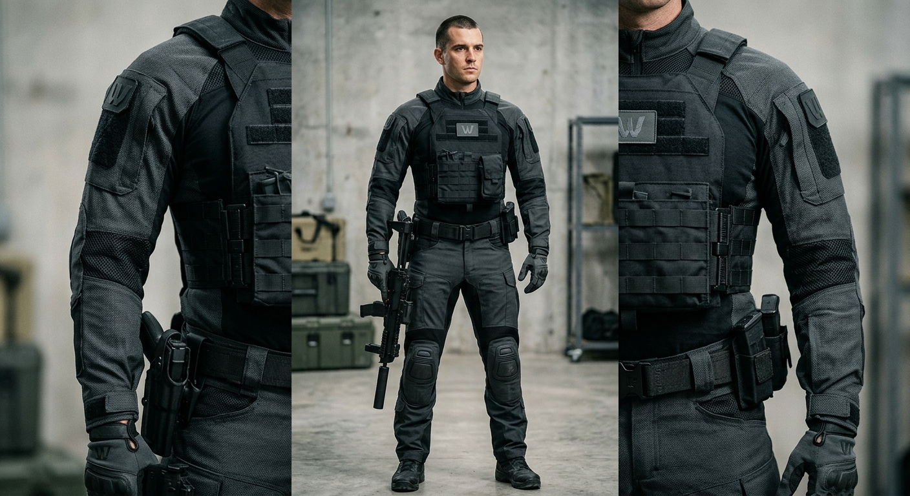
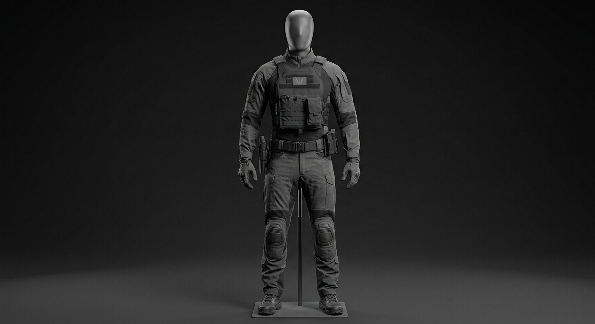

WAYNETECH // DIVISION R&D : MATÉRIAUX AVANCÉS & PHYSIOLOGIE
Technologie textile avancée // Assistance et protection du personnel
Fiche Projet : COMBINAISON EXO-TISSU (Modèle K-5)
- Classification :
- Document interne sécurisé
- Accès Restreint (Niveau 4)
- Nom de code officiel (B2B) :
- Tenue de protection intégrale et d'assistance pour interventions en milieux industriels hostiles (incendies, effondrements, zones contaminées).
- Usage réel sur le terrain :
- Combinaison tactique légère, pare-balles, anti-lames et ignifugée, offrant une assistance musculaire passive pour les opérations d'infiltration urbaine et de sauvetage extrême..


Caractéristiques Générales
- Configuration
- Combinaison tactique intégrale, une pièce
- Tailles disponibles
- XS à XXL (coupe ajustée sur mesure en option)
- Masse (taille M)
- ~2,4 kg
- Composition
- Fibre technique tissée haute résistance, renfort balistique localisé
- Coloris standard
- Gris anthracite / noir mat
Matériau & Structure
- Tissu principal
- Fibre technique tressée, résistance à la déchirure renforcée
- Zones de renfort
- Poitrine, épaules, genoux
- Élasticité
- 4 sens, liberté de mouvement complète
- Résistance à l'abrasion
- Élevée
- Traitement
- Déperlant, anti-UV
Déploiement
- Usage terrain tout climat
- Compatible port prolongé (12h+)
- Entretien simplifié, lavable
- Certaines pistes improviées adaptées
- Livrée avec sac de transport dédié
Signature
- Finition mate anti-reflet
- Silhouette discrète, non ostentatoire
- Aucun élément lumineux ou réfléchissant apparent
- Patch WayneTech discret, non métallique
Respirabilité & Confort
- Zones en maille respirante aux articulations (aisselles, genoux, coudes)
- Doublure interne anti-transpiration
- Col montant ajustable
- Coupe ergonomique pensée pour un port prolongé
Modularité
- Système d'attaches MOLLE intégré sur le torse et les cuisses
- Compatible holster de cuisse amovible
- Poches tactiques renforcées (avant-bras, cuisses)
- Points d'ancrage pour équipement complémentaire WayneTech
Equipement Intégré
- Emplacement dédié pour communication radio (col/épaule)
- Passants pour antenne discrète
- Poche dorsale pour poche à eau ou batterie portable
- Compatible port de gilet tactique par-dessus
Entretien
- Lavage machine à froid recommandé
- Séchage à l'air libre
- Panneaux balistiques retirables avant lavage
- Durée de vie estimée : 3 à 5 ans en usage intensif
Protection
- Panneaux balistiques légers amovibles (poitrine, épaules, genoux)
- Renforts souples sur les articulations sensibles
- Pas de plaque rigide intégrale (mobilité prioritaire sur la protection lourde)
- Compatible avec plaque balistique rigide additionnelle en option
Armement
Aucun armement, toute les armes son fixable a la ceinture, au gilet tactique ou autres.
Technologies WayneTech
- Fibre WT-Flex — Tissu technique propriétaire à haute élasticité et résistance
- Traitement déperlant WayneTech longue durée
- Compatibilité modulaire avec l'ensemble de l'équipement tactique WayneTech
Communications
- Communications sécurisées
- Chiffrement
- Liaison de données tactique
- Systèmes redondants
- Fonctionnement essentiel sans connexion WayneTech
Ecosystème WayneTech : EXO-TISSU Assistance™
- Prise de mesures et ajustement sur mesure
- Remplacement des panneaux balistiques
- Entretien et réparation spécialisée
- Renouvellement de la garde-robe tactique
Contrôle Des Technologies Sensibles
- Vente soumise à vérification du statut professionnel du client
- Panneaux balistiques renforcés soumis à autorisation selon contrat
- Aucune fonction électronique embarquée nécessitant de contrôle à distance